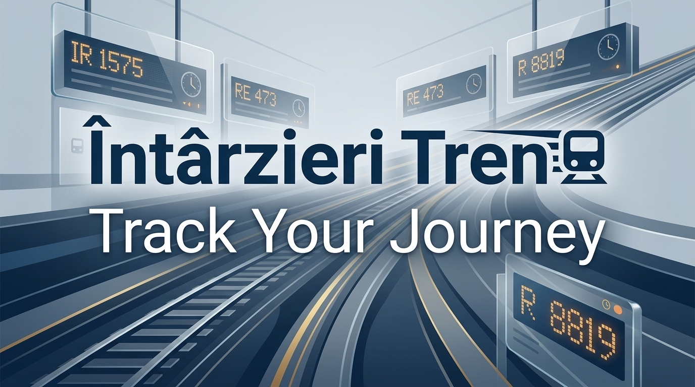
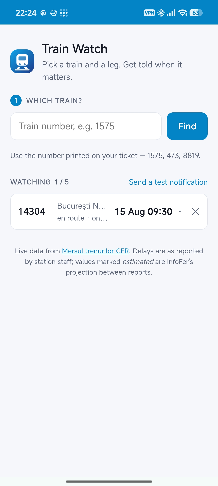
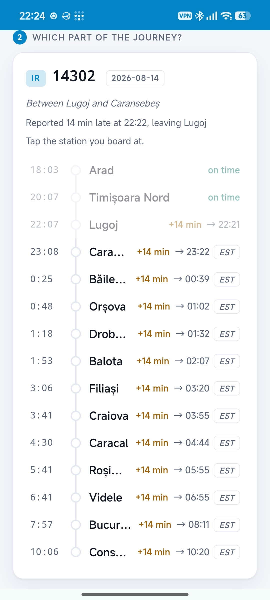
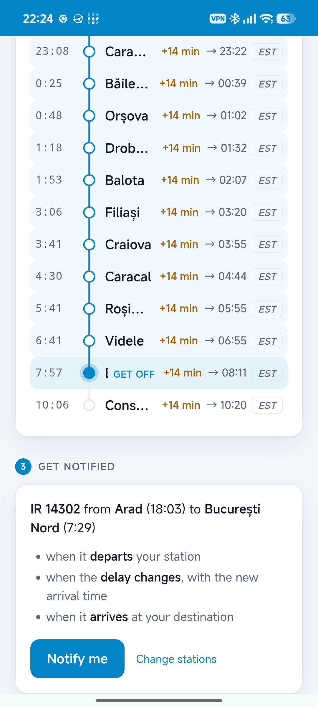
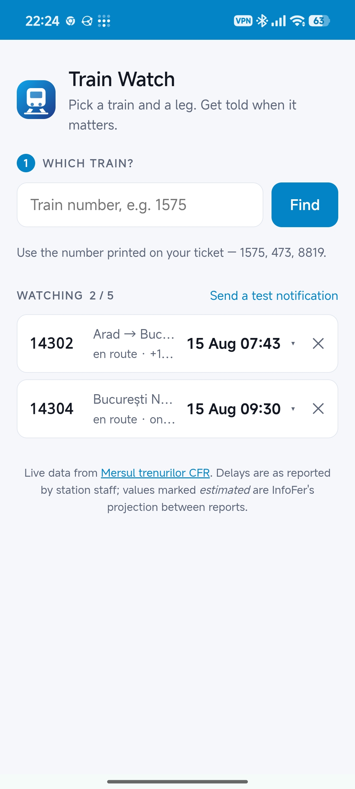

Ferramentas do dia a dia
Thermostat Monitor
Veja a temperatura de casa com o histórico dos sensores e gráficos.
Acompanhe os trens da Romênia, suas rotas e as mudanças nos atrasos.

Acompanhe suas viagens de trem pela Romênia sem esforço. Intârzieri Tren é um aplicativo da Web progressivo (PWA) projetado para fornecer atualizações em tempo real e tranquilidade durante a viagem.
Basta selecionar seu trem e sua rota, e o aplicativo irá mantê-lo informado a cada passo do caminho, sem a necessidade de verificar constantemente uma tela.




Veja a temperatura de casa com o histórico dos sensores e gráficos.

Uma nova ideia de defesa de torres: use física orbital e raios de resgate para salvar vidas.

Acompanhe anúncios, compare mudanças de preço e encontre uma boa oferta.